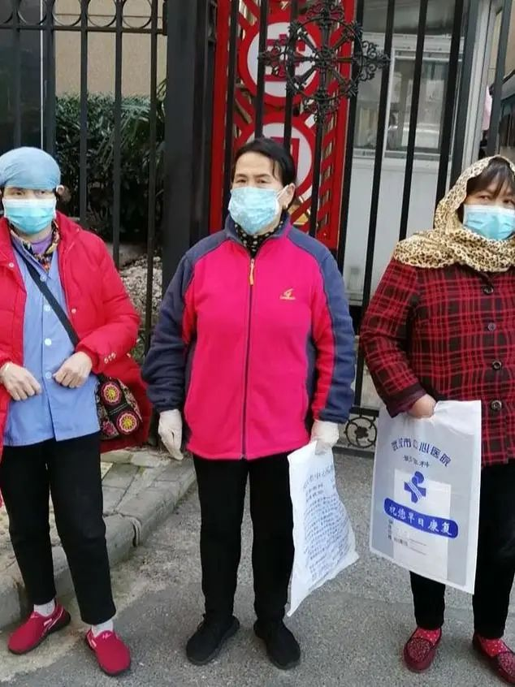
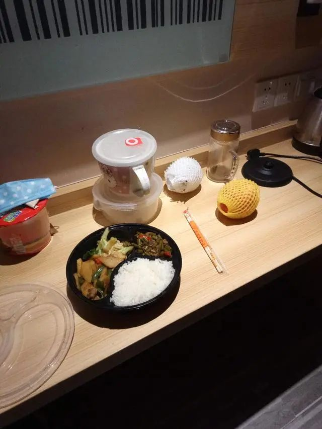

他们曾经照顾病人，如今成为了病人
原文链接 备份链接 2月14日晚上十一点多，高师傅和其他五位护工终于不再无“家”可归。 曾经的“家”是在医院，他们所照顾的病人病床旁的折叠床上。作为武汉中心医院南京路院区的一名护工，高师傅一天24小时都在医院。春节那三天会有三倍工资，所以 …
金才玉（中）等护工前往街道求助，希望安排收治。
本文约3393字
预计阅读时间9分钟
编辑 | 张国
武汉1月23日宣布封城之后，900万人留守，正在武汉市中心医院照顾病人的6位护工阿姨却发现，自己很快陷入了无处可去的窘境。
疫情蔓延开来的时候，这些护工在干部病房里照顾离退休干部。她们老家都在农村，到武汉是全天候照顾病人的饮食起居，吃住都在医院，没有固定住所。疫情加剧后，为避免交叉感染，院方要求护工全部离开，她们照顾的病人改由护士负责。
最困难时，这些阿姨只能在医院东躲西藏打地铺。有人出现了肺炎症状，也很难得到及时安置。
61岁的金才玉是其中之一。1月27日那天，金才玉和她照顾的病人一同从武汉市中心医院后湖院区转到南京路院区。后湖院区已被列为新冠肺炎定点医院，其他病人都被转出。
后湖院区有护士提醒金才玉，医院内部有人感染了新冠肺炎，包括不少医生和护士，叮嘱她一定要勤洗手、戴口罩。武汉市中心医院是此次疫情中医务人员感染较多的医院之一。
到了2月上旬，武汉市中心医院南京路院区也出现了不少新冠肺炎确诊和疑似病例。另一位护工陶明娟记得，那些天医院楼道内的咳嗽声“多了起来”，她很害怕。这几年，陶明娟大部分时间都在做护工。春节前，听说武汉出现了能“人传人”的疾病，她和几个同乡原打算结伴回乡。但1月23日武汉突然封城，回家的路被切断了。
2月10日晚，金才玉照顾的病人出现了发烧症状，后来的CT检测结果发现肺部病毒性感染。医院很快将病人隔离，之后将其转到定点医院。金才玉成了需要隔离的“密切接触者”。
老人的子女在外地，最近一年都是金才玉在照顾。听说了父亲的病情，老人的儿子给金才玉转了500元作为感谢。
2月11日，金才玉用这笔钱到医院给自己做了一次CT检查。“那时候也有点咳嗽，心里很害怕，因为我一直在爹爹（方言，指老年男性）跟前照顾他。”幸运的是，她属于支气管炎，并非新冠肺炎。
但其他滞留在医院的护工没有这么幸运。2月11日-13日，另外5位护工陶明娟、王珍先、刘桂明、尹志芬、陈焕子经CT诊断为肺部病毒性感染。当时试剂盒紧缺，她们无法做核酸检测，一直未能确诊。医院内确诊和疑似病例较多，护工的工作需要24小时看护病人，医生也难以判定她们的感染源头。
2月12日，院方要求护工们离开医院。有护士提醒她们，可以去找附近的街道和社区求助，上报患病信息，并安排隔离收治。按照当时武汉市疫情防控指挥部的要求，医院收治新冠肺炎患者，必须经由社区联络才能安排床位。
从这天起，这6位护工陆续找到附近的街道办事处反映情况，但结果都未能如愿。街道办事处和社区居委会工作人员都称，因为她们在武汉没有住所、没有户籍，无法安排隔离和收治，只能登记她们的姓名、电话、症状等基本信息，等待安排。
医院和街道都表示无法安排隔离和收治后，她们彻底慌了。“从来没有想过会遇到这种事。”陶明娟说。
陶明娟在武汉做护工将近10年。因为年纪大了，丈夫身体也不好，去年春节家人都劝她不要再出来打工，但她还是想趁着腿脚方便，到武汉的大医院找点活儿干。儿子两年前研究生毕业，她又操心起了给儿子找对象的事儿，想多攒点儿钱。在武汉做护工，每天最少可以挣130多元，远比在老家务农收入高。疫情打乱了她的计划。
情急之下，金才玉等人向给她们介绍工作的家政服务中介公司求助。该公司负责人聂腊仙当时正在武汉居家隔离，也很为她们着急。“她们都是55岁以上的人，文化水平不高，智能手机都不会用，有的连怎么存电话、发短信都不会，这叫她们怎么办呢？”
聂腊仙向110、120、市长热线、街道和社区等多方求助，但始终找不到地方可以收留这6位护工。
他在网上发出的求助信息强调：这些护工阿姨都是外来打工者，在中心医院的干部病房照顾离退休干部，但在武汉没有固定住所，外加年纪较大，也不懂其他求助渠道。这种情况下，感染加重可能随时危及生命，流落街头也会有感染别人的可能性。
有志愿者注意到这条求助信息，想方设法帮忙联系、求助。
2月12日晚，无处可去的几位护工不得不自己想办法。金才玉找到了一位老乡，在一个病房里躲了一夜。王珍先、陈焕子在医院门诊楼找了个角落，挤着过了一夜。尹志芬、陶明娟、刘桂明3人找了几张纸壳，垫在冰冷的楼道里，拥着被子依偎在一起。
那几天，湖北省及武汉市多次召开会议，提出“应收尽收、应治尽治”原则，推进新冠肺炎确诊患者、疑似患者、无法排除感染可能的发热患者、确诊患者的密切接触者“四类人员”分类集中收治。
6人中会用智能手机的金才玉和王珍先也看到了这样的说法。连续几天，她们多次向附近街道、派出所和社区反映自己的困难。
“我们跟街道说，不管哪样总要有个遮风避雨的地方，求他们给安排。从11日到13日每天都去，一天去找三四次，但每次都是一样的（结果）。”金才玉回忆。
6人当中，只有金才玉的CT检测结果正常。她明白，跟已有感染症状的其他5人待得越久，自己越可能感染。但医院不让住了，社区又无法安排，她也实在没地方可去，只好戴着两层口罩，跟大家待在一起。
口罩是一位护士给她的。她之前曾帮忙腾空病房、搬运物资，护士给她塞了一盒口罩。这些口罩并非医用一次性口罩，还有一股奇怪的味道。但当时口罩奇缺，金才玉坚持佩戴口罩。事后她回想，这可能是自己接受的最直接的帮助。
2月13日晚，6人又在医院楼道里将就了一夜。医院并不同意她们继续留在院内，但因为她们实在无处可去，保安没有采取强制措施。
她们白天去找街道继续求助，或者在医院的花坛边期盼消息，晚上“趁机溜进”医院楼道，挤在一起取暖。尹志芬说，楼道里铁制的椅子和地板，都是一样的冰凉。
比这更让她们难忘的，是对家人撒的谎。以前，金才玉几乎每晚都会跟家人视频聊天，但2月13日那天晚上，她骗家人说自己在医院附近的小旅社住下了，“跟几个老姐妹住在一起，很好”。
儿子不放心，发了好几次视频邀请，都被金才玉拒绝了。她找借口，说流量不足、话费不够。过了一会儿，儿子给她充好话费，她又说信号不好。“在外面这么多年了，也不想家里给我担心。”
尹志芬自认也是个很要强的人。武汉封城以来，她跟家人通话的时间比以前短了许多。家人问起，她都说自己在医院一切都好。但打心底里，她不想挂断电话。儿媳妇去年生了娃，小孙子正是牙牙学语的时候，她想多听一听。
最艰难的日子是2月14日。这天，武汉开始大幅降温，晚上更是风雨交加，有的地方还飘起了雪花。6个人已经两天没有正经吃过一顿热饭了。她们只能吃之前买的饼干充饥。她们也买了泡面，但没处打热水。
那天也是转机到来的时候。有志愿者和记者核实相关信息后，向武汉市和江岸区疫情防控指挥部反映了相关情况。当晚，中国青年报·中国青年网记者通过江岸区民政局，联系到了位于江岸区的一处隔离点。
这天一直到午夜，风雨才稍弱了些。2月15日凌晨左右，在大家的帮助下，6位护工先后住进了隔离点。
隔离点为6位护工准备的餐食。
根据病情，工作人员将她们分别转送至不同医院。2月17日，刘桂明被转送至华润武钢医院接受治疗。2月18日，王珍先、尹志芬被转至中南医院；症状轻微的金才玉、陈焕子分别被送至两处方舱医院。2月22日，陶明娟从隔离点被转送到新华医院接受治疗。
在隔离点和医院，她们陆续接受了CT和核酸检测，结果各有不同。陈焕子和陶明娟核酸检测结果都是阴性，CT检测为病毒性肺炎。尹志芬正在等待她的结果。刘桂明前后做过4次核酸检测，前两次结果未知，后两次结果为阴性。王珍先迄今接受过4次核酸检测，第一次检测结果为阴性，第二次结果为阳性，后两次结果还未拿到。“护士说核酸检测不准，要我们多做几次。”
只有金才玉，做过2次核酸和3次CT检测，结果都没什么异常。她安慰其他人说：“我们都是同患难的老姐妹啊，一定会没事的。”
金才玉的老家在湖北省枝江市。她以前从没在外地过年。但2020年春节，他们一家8口分布在好几个地方。因为疫情，大儿子一家留在广州，小儿子一家留在宜昌，只有64岁的丈夫留在老家。她希望疫情赶快结束，赶紧回老家看看，如果可以的话，也让孩子们都回家，“补过一个年”。
住院后，刘桂明感觉自己身体恢复得不错，听护士说再有一段时间自己就可以出院。但她担心的事情又来了：因为在武汉没有住所，出院以后仍需隔离观察，这一次，她希望政府部门能够给安排合适的住处。
（王嘉兴对此文有贡献）
中国青年报·中国青年网出品
微信编辑 | 陈轶男

觉得好看请点这里
原文链接 备份链接 2月14日晚上十一点多，高师傅和其他五位护工终于不再无“家”可归。 曾经的“家”是在医院，他们所照顾的病人病床旁的折叠床上。作为武汉中心医院南京路院区的一名护工，高师傅一天24小时都在医院。春节那三天会有三倍工资，所以 …
原文链接 备份链接 *************▲*************2月9日，医护人员在雷神山医院了解新冠肺炎患者病情。（新华社 高翔/图） 全文共4438字，阅读大约需要10分钟。 只要有病人，就有工作，一旦丢失了客源，也就失 …
原文链接 备份链接 *************▲*************2020年2月9日，武汉，一名医护人员正在穿防护服。现阶段，医护人员的心理问题尚未浮现，他们面对的最大问题仍是超负荷工作。（拾城 赖鑫琳/图） 全文共6395字，阅 …
原文链接 备份链接 小姨电话打进来时，蔡婷正坐在去隔离的转运车上。“外婆走了”，小姨在电话里哭。 那通两分钟的电话里，蔡婷没有哭——之后也没有。她上一次哭，还是一个星期前的2月5日，她拿到了核酸阴性的检测结果，而母亲也是单阳，明知患病但都 …
原文链接 备份链接 新型冠状肺炎肆虐的当下，发热孕妇在孝感的处境很尴尬：妇产科不接收发热孕妇，发热门诊不接受孕妇，医院之间相互推脱，他们得不到治疗的机会。 文 | 吴美芬 1月22日，在武汉工作的邹杰（化名）和怀孕四个月的妻子，回到家乡孝 …